Create programs, courses and lessons
Build a structured learning experience by creating a program, adding courses to it, and filling each course with video or text lessons. Programs group related courses under a single title so members can enroll once and access everything in one place. You can also configure certificates and track learner progress with analytics.
Before you get started
- You must be a community admin.
- Your community must have the Courses tab visible. See Manage community navigation tabs to enable it.
Open the Courses tab
- Open your community.
- Click Courses in the left sidebar.
The Courses tab shows all programs and standalone courses. Four action buttons at the top let you create a New program, add a New course, configure a Certificate, or view Analytics.
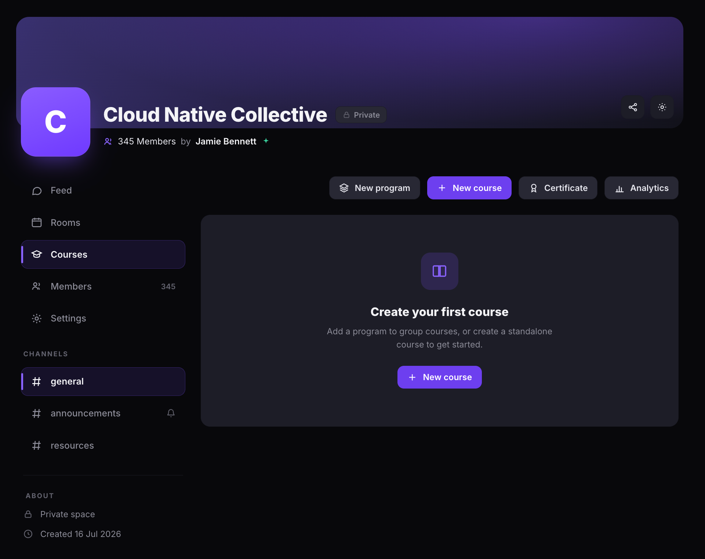
Create a program
- Click New program.
- Enter a Title for the program.
- Optionally add a Description.
- Under Cover image, click Add a cover image to upload an image.
- Under Visibility, select one:
- Draft — only admins can see it.
- Published — visible to members.
- Click Create.
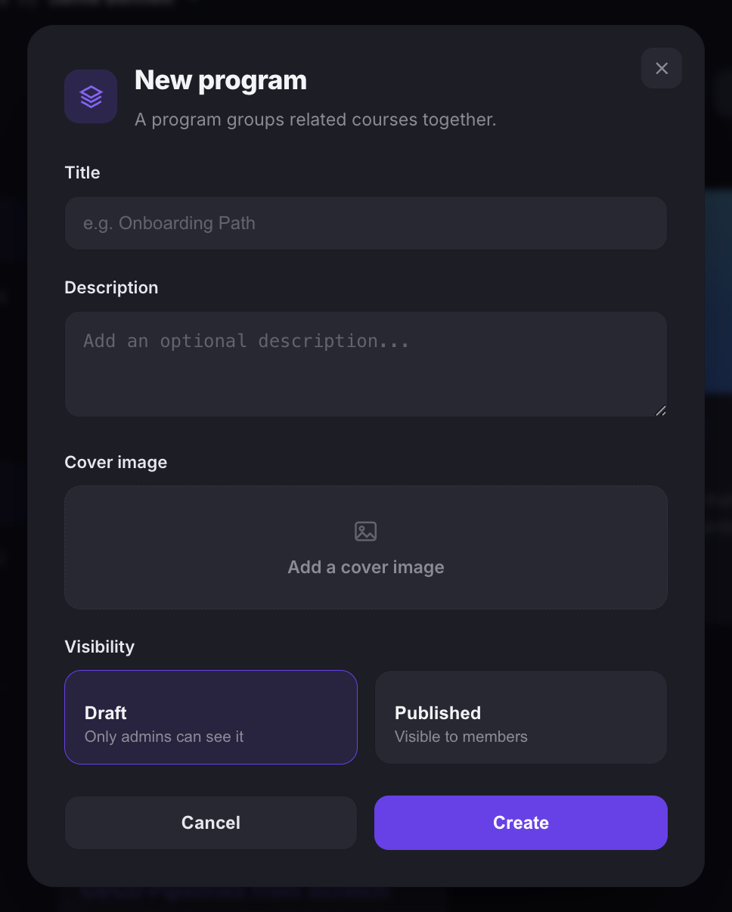
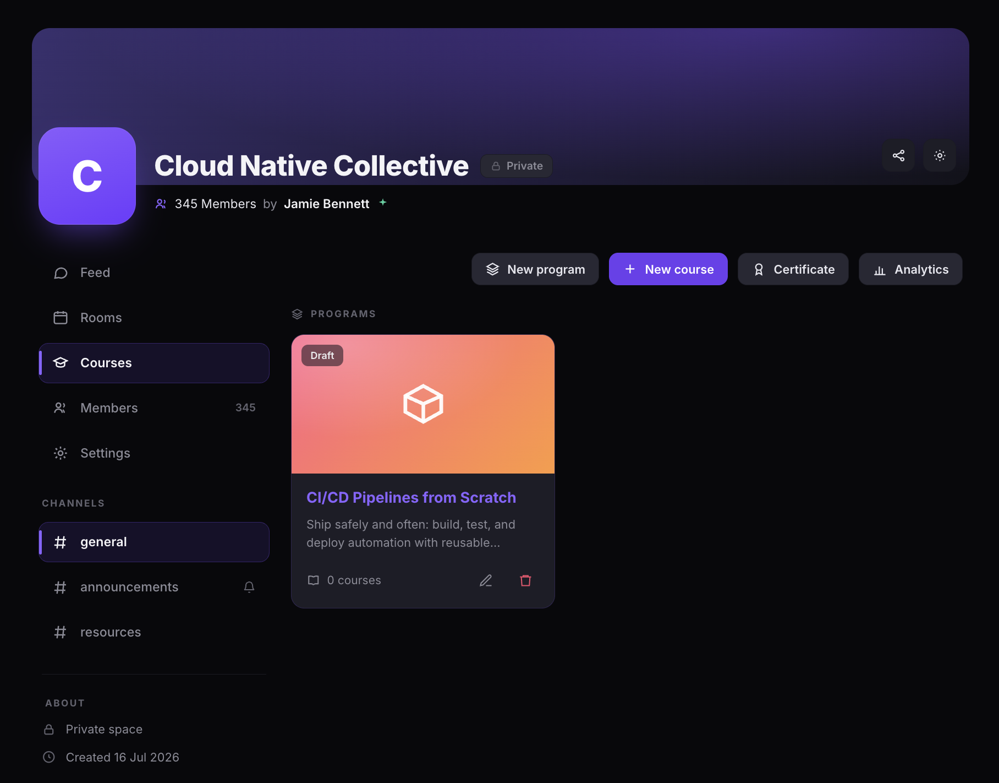
Add a course to the program
- Click the program card to open it.
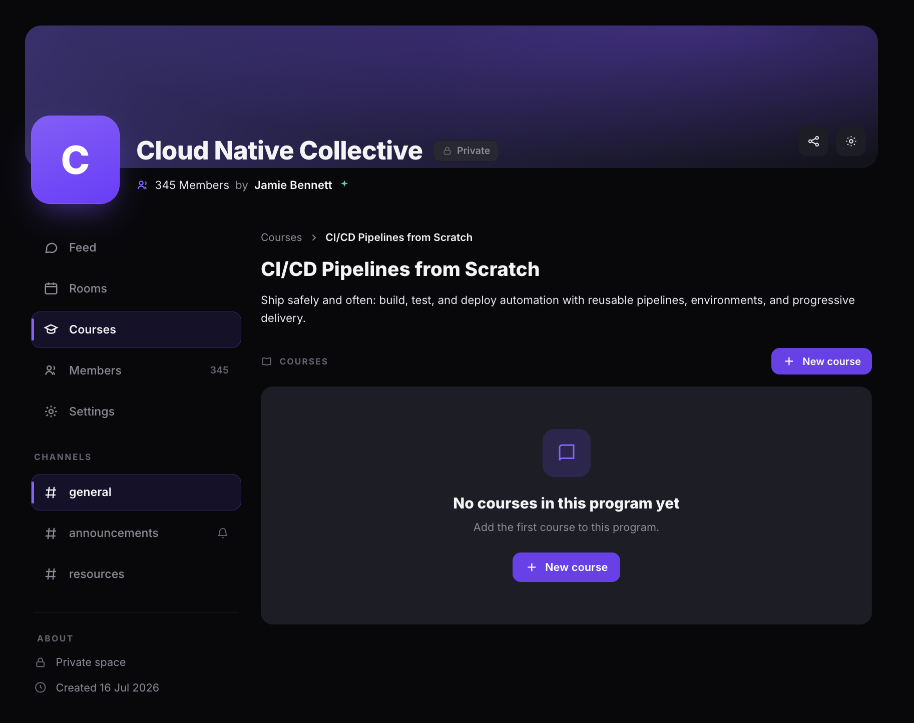
- Click + New course.
- Enter a Title and optionally a Description.
- Under Program, select the program to assign the course to. Select None (standalone course) to create a course that is not part of any program.
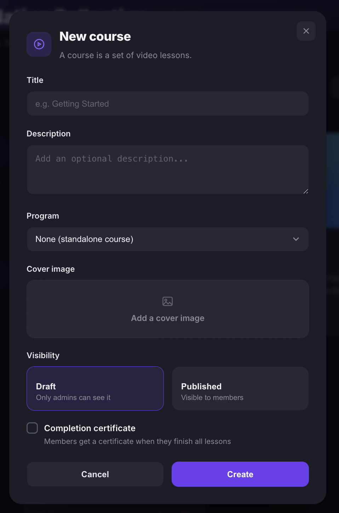
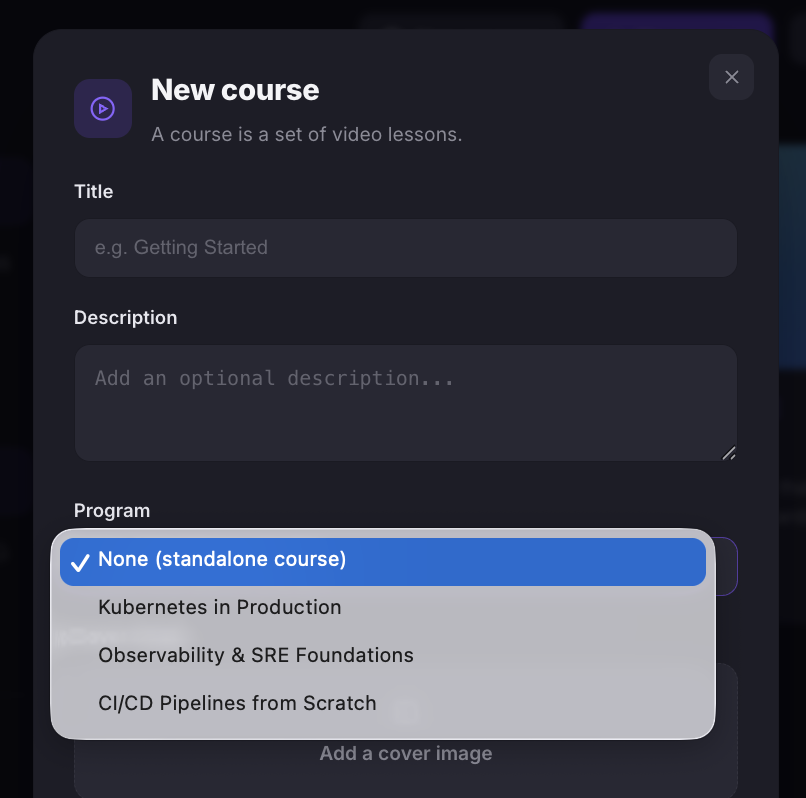
- Under Cover image, click Add a cover image to upload an image.
- Under Visibility, select Draft or Published.
- Optionally check Completion certificate to award members a certificate when they finish all lessons.
- Click Create.
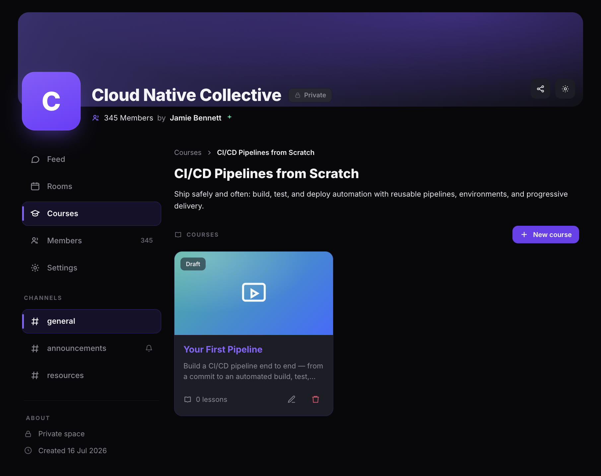
Add lessons to a course
- Click the course card to open it.
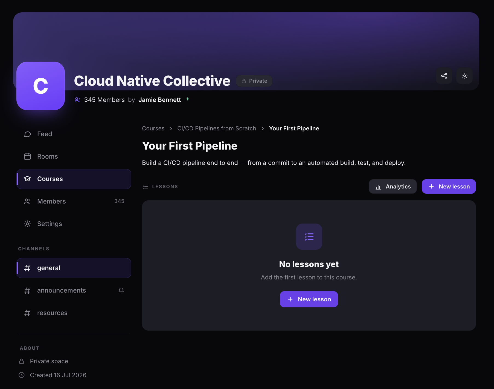
- Click + New lesson.
- Under Lesson type, select one:
- Video — upload an MP4 file or embed a YouTube/Vimeo link.
- Text — write lesson content using the rich text editor.
- Enter a Title for the lesson.
The remaining fields depend on the lesson type you selected.
Add a video lesson
- Under Video source, select one:
- Upload MP4 — upload a video file directly. The file is stored in secure storage.
- Embed URL — paste an unlisted YouTube or Vimeo embed link.
- If you selected Upload MP4, click Choose a video file to upload your MP4.
- If you selected Embed URL, paste the embed link in the Embed URL field.
- Enter the Duration (minutes). This is used to calculate total learning hours for certificates.
- Optionally add a Description.
- Under Visibility, select Draft or Published.
- Click Create.
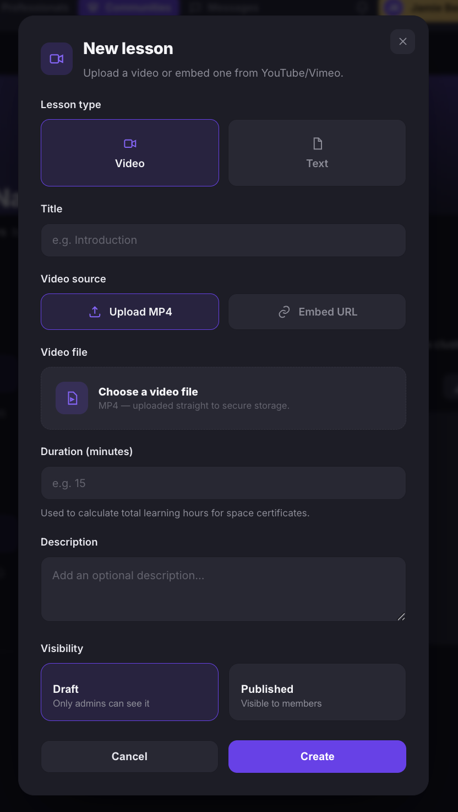
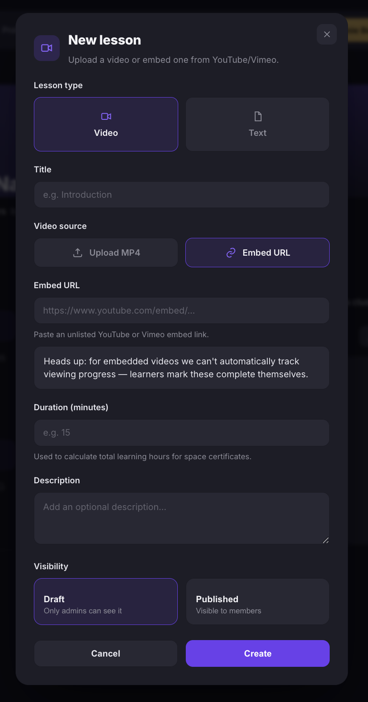
Add a text lesson
- Under Content, write the lesson content using the rich text editor. You can format text with bold, italic, and headings, add links, images, and embedded videos.
- Optionally add a Description.
- Under Visibility, select Draft or Published.
- Click Create.
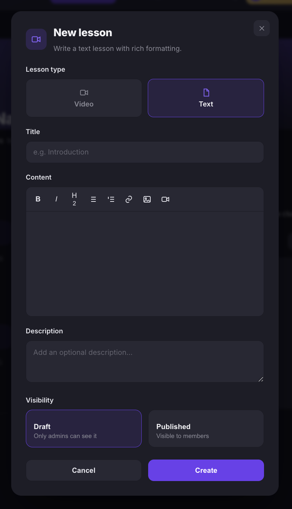
The course appears inside the program. Each course card shows the cover image, title, description, lesson count, visibility badge, and edit and delete icons.
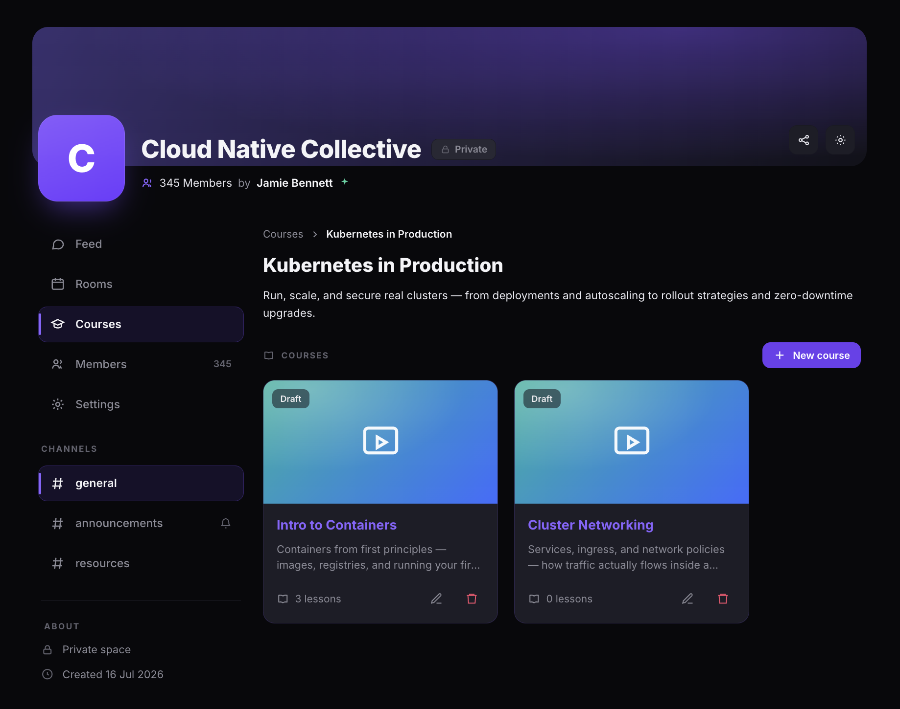
Manage lessons
After adding lessons, the course detail page shows a progress bar, lesson count, and a list of all lessons. Each lesson displays its title, type (Video or Text), visibility badge, and completion status. You can drag lessons to reorder them, or use the play, edit, and delete icons on each row.

View course analytics
Click Analytics on the course detail page to see learner progress for that course. Four summary cards show Members, Started, Completed, and Avg. completion. Below, a table lists each member with their completion progress bar, lessons completed out of total, percentage, and last activity date.

View a lesson
Click a lesson or the play icon to open the lesson viewer. The viewer shows the video or text content on the left and a Course content sidebar on the right with all lessons, completion status, and navigation. Click Mark complete to mark the current lesson as finished, or use the Previous and Next buttons to move between lessons.
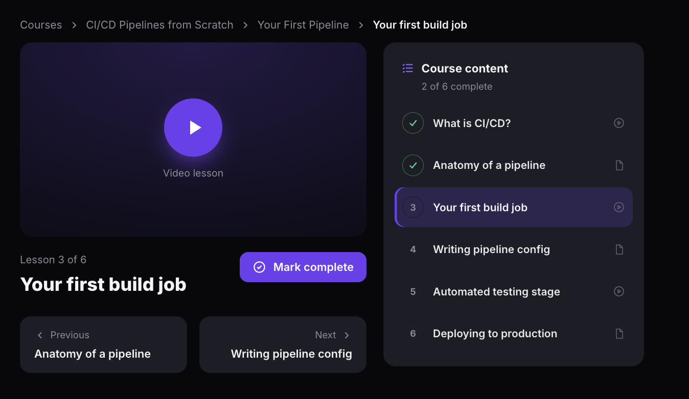
Set up certification
- On the Courses tab, click Certificate.
- The Certification settings dialog opens with two main options: Use a custom certificate design and Enable certification.

Enable certification rules
- Toggle Enable certification on.
- Enter a Certificate title.
- Set the completion threshold using one or both criteria:
- Minimum courses completed — the number of courses a member must finish.
- Minimum hours of coursework — the total learning hours a member must accumulate.
- Click Save.
Members who meet either threshold will receive a certificate.

Customize certificate design
- Toggle Use a custom certificate design on.
- Upload a background image (PNG or JPG, landscape A4, approximately 1600×1131px).
- Choose Dark text or Light text to match your background.
- Under Layout, select a preset layout (Typical, Longest, or My name) or drag the text blocks into position on the preview.
- Use the text element controls below the preview to toggle visibility and adjust the size (S, M, L) of each element: Heading, Recipient name, Course/certificate title, Issued by your community, Completion date, and Certificate ID/Verify link.
- Click Save.

View all programs and courses
After creating programs and courses, the Courses tab displays all your programs as cards under the Programs heading. Each card shows the cover image, title, description, course count, visibility badge (Published or Draft), and edit and delete icons. Click a program card to view its courses and lessons.

View all courses analytics
- On the Courses tab, click Analytics. You can also click Analytics from within a course detail page.
The Analytics page shows four summary cards: Members, Courses, Avg completion, and Certified (with percentage). Below, a Filters section lets you narrow results by courses completed, overall percentage, certificate status, learner status, and certificate date range.
The learner table displays each member's name, email, courses completed, overall progress bar with percentage, total hours, and certificate status. Click Download CSV or Download Excel to export the data.